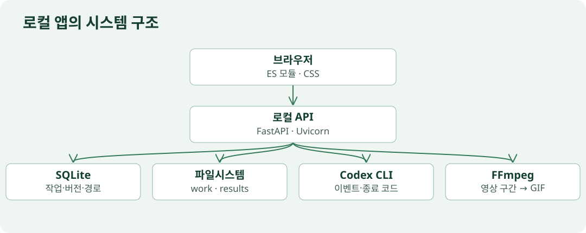

BLOG LAB STUDIO · v0.6.205. System Architecture
로컬에서 동작하는 구성 요소
Windows 브라우저에서 빌드 없는 JavaScript ES 모듈이 FastAPI에 요청한다. Uvicorn은 루프백 주소에 바인딩하고 앱은 Host와 Origin을 확인한다. 개인 PC에서 Node 빌드 없이 화면을 실행할 수 있다.
SQLite는 작업·버전·경로·게시 상태를 보관한다. 원본 사진은 PC에 두고, 전달용 사본과 캐시는 work, 확정한 산출물은 results로 나눈다. openpyxl은 질문지, Pillow는 미리보기와 축소 사본, FFmpeg는 GIF 변환을 맡는다.
Codex CLI는 명시적으로 실행할 때만 자식 프로세스로 시작한다. 모델·추론 설정과 실행 결과를 회차에 연결한다. 공개 블로그 조회 역시 사용자가 동기화를 요청할 때 수행한다.

로컬 앱의 시스템 구조